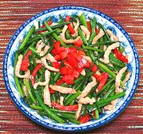

|
Pork with Flowering ChivesChina - Zhejiang - Jiu Cai Hua Chao Rou Si | ||||
| Serves: Effort: Sched: DoAhead: |
4 side ** 30 min Prep |
This is a very simple stir fry that can serve as a side dish or as a light main dish for two. The flowering chives give a rather unusual mix of soft and crunchy textures and a unique flavor. | |||
|
6 ------- 3/4 3/4 2 1 ------- 9 2 1/8 ------- 1 ar 1/2 1 |
oz --- t T t T --- oz oz in --- T t t |
Pork, lean -- Marinade Soy Sauce Rice Wine (1) Potato Starch Water -- Vegies Flowering Chives (2) Bell Pepper, red Ginger Root -------------- Oil Oil (more) Salt Sesame Oil, dark |
Prep - (25 min)
|